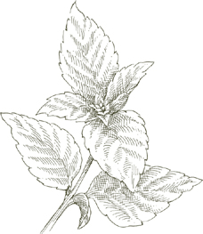
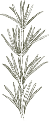
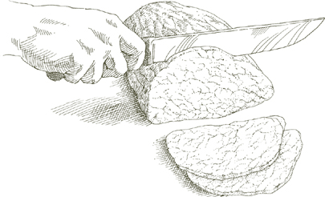
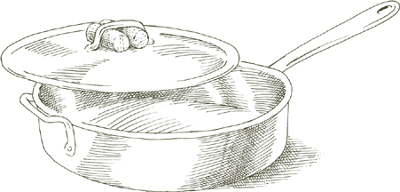

FЛАВОР, И.Н. IТАЛЬЯНСКИЕ БЛЮДА, нарастает снизу. Это не чехол, это основа. В соусе для пасты ризотто, суп, фрикасе, тушеное мясо или блюдо из овощей — основа вкуса, которая поддерживает, поднимает настроение, подчеркивает основные ингредиенты. Понять этот архитектурный принцип, лежащий в основе структуры большей части итальянской кухни, и ознакомиться с тремя ключевыми приемами, позволяющими его применять, — значит сделать большой шаг к овладению итальянским вкусом. Эти методы известны как баттуто, софритто, и несапорианский.
Название происходит от глагола батарея, что означает «ударить», и описывает нарезанную смесь ингредиентов, полученную путем «ударения» их по разделочной доске разделочным ножом. Когда-то почти неизменные компоненты баттуто были сало, петрушку и лук — все очень мелко нарезанное. В зависимости от блюда можно добавить чеснок, сельдерей или морковь. Основное изменение, которое принесло современное употребление, - это замена сала оливковым или сливочным маслом, хотя многие деревенские повара по-прежнему полагаются на более богатый вкус последнего. Как бы ни было сформулировано, баттуто лежит в основе практически каждого соуса для пасты, ризотто или суп, а также бесчисленное множество мясных и овощных блюд.
Когда баттуто обжаривается в кастрюле или сковороде до тех пор, пока лук не станет полупрозрачным, а чеснок, если он есть, не окрасится в бледно-золотой цвет, он превратится в софритто. Этот шаг предшествует добавлению основных ингредиентов, какими бы они ни были. Хотя многие повара делают софритто к обжариваем все компоненты баттуто за один раз, это требует более тщательного приготовления, чтобы лук и чеснок были разделены. Сначала обжаривается лук, когда он станет прозрачным, добавляется чеснок, а когда чеснок окрасится, остальная часть баттуто. Причин две: один, если начать с обжаривания лука, вы создаете более богатую вкусовую основу для обжаривания баттуто; два, поскольку лук обжаривается дольше, чем чеснок, если вы положите оба одновременно, к тому времени, когда лук станет полупрозрачным, чеснок станет слишком темным. Если, однако, ваш баттуто рецепт требует панчетта, обжарьте лук и панчетта вместе, чтобы использовать панчетта'жира, что снижает потребность в других шортенингах.
Неидеально выполненный софритто ухудшит вкус блюда, как бы тщательно ни выполнялись все последующие этапы. Если лук просто тушеный или не полностью обжаренный, вкус соуса или ризотто, или овощ так и не взлетит и останется слабым. Если чесноку дать потемнеть, его острота будет доминировать над всеми остальными вкусами.
Примечание  A баттуто обычно, но не всегда, становится софритто. Иногда вы комбинируете его с другими ингредиентами блюда в сыром виде. крудо, если использовать итальянскую фразу. К этой практике прибегают для того, чтобы добиться менее резкого вкуса, как, например, при приготовлении жаркого из баранины, в котором мясо готовится вместе с баттуто и крудо с самого начала. Другой пример: песто, правда баттуто и крудо, хотя, возможно, потому, что его традиционно растирали пестиком, а не рубили лезвием, его не всегда признают таковым. Однако есть немало итальянских поваров, которые, говоря о каком-либо баттуто, могли бы сказать, что они делают пестино, «немного песто».
A баттуто обычно, но не всегда, становится софритто. Иногда вы комбинируете его с другими ингредиентами блюда в сыром виде. крудо, если использовать итальянскую фразу. К этой практике прибегают для того, чтобы добиться менее резкого вкуса, как, например, при приготовлении жаркого из баранины, в котором мясо готовится вместе с баттуто и крудо с самого начала. Другой пример: песто, правда баттуто и крудо, хотя, возможно, потому, что его традиционно растирали пестиком, а не рубили лезвием, его не всегда признают таковым. Однако есть немало итальянских поваров, которые, говоря о каком-либо баттуто, могли бы сказать, что они делают пестино, «немного песто».
Шаг, следующий за софритто называется несапорианский, «дарующий вкус». Обычно это относится к овощам, поскольку в итальянской кухне овощи являются важнейшим ингредиентом большинства первых блюд — пасты, супов, ризотти- а также во многих фрикасе и рагу и часто сами по себе являются важным блюдом. Но этот шаг может также применяться к фаршу, который будет превращен в мясной соус или мясной рулет, или к рису, когда его поджаривают в духовке. софритто в качестве предварительного шага к созданию ризотто. Когда вы узнаете об этом, вы увидите его в бесчисленных рецептах.
Техника несапорианский требует, чтобы вы добавили овощи или другие основные ингредиенты в софритто основу и на очень сильном огне быстро обжарьте их, пока они полностью не покроются ароматическими элементами основы, особенно нарезанным луком. Неудовлетворительный вкус, неубедительность блюд, претендующих на итальянский стиль, часто можно объяснить нежеланием некоторых поваров тщательно выполнить этот этап, неспособностью уделить ему достаточно времени на достаточном огне или даже вообще его пропуском.
A софритто иногда готовится с оливковым маслом в качестве единственного жира, но в тех случаях, когда можно почувствовать вкус оливкового масла, навязчивые итальянские повара используют сливочное масло вместе с растительным маслом с нейтральным вкусом. Сочетание этих двух методов позволяет обжаривать при более высокой температуре, не поджигая масло и не осветляя его.
 Компоненты
Компоненты 
Из всех ингредиентов, используемых в итальянской кухне, ни один не дает более пьянящего вкуса, чем анчоусы. Это исключительно адаптируемый аромат, который приспосабливается к любой роли, которую ему пожелают назначить. Нарезанный анчоус, растворяющийся в кулинарном соке жареного мяса, лишается своей явной индивидуальности, но при этом способствует глубине вкуса мяса. Когда анчоус выходит на передний план, например, в соусе к пасте или с расплавленной моцареллой, волнующий призыв анчоуса полностью подчиняет себе наши вкусовые рецепторы. Анчоусы незаменимы Банья Каода, пьемонтский соус для сырых овощей и различных форм сальса верде, пикантный зеленые соусы подаются к отварному мясу или рыбе.
Какие анчоусы брать и как их готовить Чем мясистее анчоусы, тем богаче и округлее их вкус. Самые мясистые анчоусы — те, которые хранятся под солью в больших банках и продаются поштучно, на вес. Для большинства целей четверть фунта — это достаточное количество, которое можно купить за один раз. Готовим филе следующим образом:
• Промойте анчоусы целиком под холодной проточной водой, чтобы удалить как можно больше соли, которая использовалась для их консервации.
• Берите по одному анчоусу, взяв его за хвост, а другой рукой аккуратно соскребите с него всю кожицу ножом. Сняв с него шкуру, удалите спинной плавник вместе с прикрепленными к нему крошечными костями.
• Вставьте ноготь большого пальца в открытый конец анчоуса, противоположный хвосту, и прижмите его к кости, раскрывая анчоус до самого хвоста. Рукой ослабьте и поднимите позвоночник и разделите рыбу на два филе без костей. Проведите кончиками пальцев по обеим сторонам филе, чтобы обнаружить и удалить оставшиеся кусочки кости.
• Промойте под холодной проточной водой, затем тщательно промокните бумажными полотенцами. Выложите филе в неглубокую тарелку. Когда один слой филе покроет дно формы, налейте на него достаточно оливкового масла первого холодного отжима, чтобы покрыть его. Добавляя в блюдо филе, поливайте каждый слой оливковым маслом. Убедитесь, что верхний слой полностью покрыт маслом.
• Если вы не собираетесь использовать их в течение 2–3 часов, накройте форму и поставьте в холодильник. Если у блюда нет собственной крышки, используйте полиэтиленовую пленку. Анчоусы хранятся от 10 дней до 2 недель, но вкуснее всего их употребить в течение первой недели. Приготовленное таким образом филе прекрасно подойдет в качестве закуски или даже закуски, если намазать его на густо намазанный маслом ломтик хрустящего хлеба.
Примечание Если вы не можете найти соленые целые анчоусы, описанные выше, и вам нужно купить готовое филе, поищите те, которые упакованы в стекло, чтобы вы могли выбрать более мясистые. Не поддавайтесь соблазну анчоусов по выгодной цене, потому что действительно хорошие анчоусы никогда не бывают дешевыми, а дешевые, скорее всего, окажутся действительно ужасными — мучнистыми, пропитанными солью — продуктами, из-за которых анчоусы получили незаслуженную плохую репутацию.
Если вы используете консервированные анчоусы, не храните остатки в банке. Достаньте их, сверните в рулеты, положите в небольшую банку или глубокое блюдце, залейте оливковым маслом первого холодного отжима и поставьте в холодильник.
Не используйте пасту из анчоусов из тюбика, если можете. Он резкий и соленый, в нем очень мало теплого и привлекательного аромата, который является основной причиной использования анчоусов.
Готовим с анчоусами В большинстве случаев анчоусы мелко нарезаются, чтобы им было легче раствориться и объединить свой вкус с ароматом других ингредиентов. Никогда не кладите нарезанные анчоусы в очень горячее масло, потому что они поджарятся и затвердеют, а не растворятся, и их вкус может стать горьким. Перед добавлением анчоусов снимите кастрюлю с огня и поставьте ее обратно на горелку только тогда, когда при перемешивании анчоусы начнут превращаться в пасту. Если у вас есть возможность поставить рядом еще одну кастрюлю с кипящей водой, поставьте на нее кастрюлю с анчоусами, как на пароварке, и перемешивайте анчоусы, пока они не растворятся.
Бальзамический уксус, фирменный продукт с многовековой историей, производимый в провинции Модена, к северу от Болоньи, полностью изготавливается из вываренного уксуса. сусло — концентрированный сладкий сок — белого винограда. Настоящий бальзамический уксус выдерживается десятилетиями в нескольких бочках, каждая из которых сделана из разного дерева.
Как об этом судить Цвет должен быть глубоким, насыщенно-коричневым, с яркими вспышками света. Когда вы перемешиваете уксус в бокале для вина, он должен покрывать внутреннюю часть бокала, как густой, но текущий сироп, не пятнистый и не слишком жидкий. Его аромат должен быть интенсивным, приятно проникающим. Глоток его подарит сбалансированные кисло-сладкие ощущения, не приторные и не слишком острые, с плотным и бархатистым телом. Он никогда не бывает недорогим, и он слишком ценен и редок, чтобы его можно было поместить в контейнер, намного больший, чем флакон духов. На этикетке должно быть полностью указано официально установленное наименование, которое гласит: Традиционный бальзамик Модены. Все остальные так называемые бальзамические уксусы представляют собой обычный коммерческий винный уксус, приправленный сахаром или карамелью, не имеющий никакого сходства с традиционным продуктом.
Как его использовать Настоящий бальзамический уксус используется умеренно. В салате он никогда не заменит обычный уксус; достаточно добавить несколько капель его в основную заправку из оливкового масла и чистого винного уксуса. В кулинарии его следует класть в самом конце процесса или близко к нему, чтобы его аромат проник в готовое блюдо. Ацето бальзамико изумительно сочетается с нарезанной свежей клубникой, если ее посыпать ею непосредственно перед подачей на стол. К сожалению, бальзамический уксус стал клише того, что иногда называют «творческой» кулинарией, примерно так же, как помидоры и чеснок когда-то были клише итальянской кухни, где готовят спагетти. Его не следует использовать так часто или без разбора, чтобы его вкус потерял способность удивлять, а его выразительные акценты стали утомительными при повторении.
Базилико

Самое полезное, что можно знать о базилике, это то, что чем меньше его готовят, тем он лучше, и что его аромат никогда не бывает более соблазнительным, чем в сыром виде. Из этого следует, что вы будете добавлять базилик в соус для пасты только после того, как он будет готов, когда его смешивают с макаронами. По тем же соображениям, что самый концентрированный из базиликовых соусов, песто, всегда следует использовать в сыром виде, при комнатной температуре, ни в коем случае не разогревать. Иногда базилик готовят в супе, рагу или другом блюде, жертвуя частью живости его неограниченного аромата, чтобы связать его с что и другие ингредиенты. Однако, если вы сомневаетесь или импровизируете, положите его в самый последний момент, непосредственно перед подачей на стол.
Как использовать базилик Используйте только самый свежий базилик. Не обходитесь почерневшими, поникшими листьями. Если вы выращиваете свои собственные, выбирайте только то, что вам нужно в этот день, желательно срывать листья рано утром, пока они не получили слишком много солнца. Когда вы будете готовы использовать базилик, быстро промойте его под холодной проточной водой или протрите листья влажной тканью. Если рецепт не требует тонких полосок, нарезанных соломкой, лучше не брать нож для базилика. Если вы не хотите класть в блюдо целые листья, порвите их руками на более мелкие кусочки, а не разрезайте. Никогда не используйте сушеный или измельченный базилик. Многие люди замораживают или сохраняют базилик. Я предпочитаю использовать его в свежем виде, а если его нет в наличии, дождаться возвращения сезона.
Аллоро
Бэй, возможно, самая универсальная приправа в итальянской кухне. Его используют в соусах для пасты, ароматизируют такие различные консервированные продукты, как козий сыр в оливковом масле или вяленый инжир, он входит в большинство маринадов для мяса, является идеальной приправой для барбекю: на рыбном шампуре, на телячьей печени или даже на самом огне. Нет более приятного сочетания, чем лавровый лист с грушами, приготовленными в красном вине, или с вареными каштанами.
Что получить Лавровый лист прекрасно сохнет и хранится неограниченное время. Покупайте только целые листья, а не раскрошенные или измельченные в порошок, и храните их в плотно закрытой стеклянной банке в прохладном шкафу. Перед использованием, независимо от того, сушеные ли листья или свежие, слегка протрите каждый лист влажной тканью.
Примечание Если у вас есть сад, терраса или балкон, лавр — выносливое многолетнее растение, которое быстро превращается в красивое растение с почти неисчерпаемым запасом листьев для кухни. Если у вас суровые и длинные зимы, занесите залив в дом до весны.
Фаджиоли
Бобовые широко используются по всей Италии, но нигде к ним не относятся с такой любовью, как в центральных регионах Тосканы, Абруцци, Умбрии и Лацио. Тосканцы одобряют каннеллини, или белая фасоль. Нут и Фава фасоль торжествует в Абруцци и Лацио. Умбрия славится это чечевица. На севере есть карман обожание бобов, которое соперничает с центральным, и находится в венецианском северо-восточном углу страны, где, возможно, лучшая версия классического боба суп-макароны и фаджиоли— производится. Фасоль, которую используют венецианцы, представляет собой мраморно-розовую и белую версию клюквенной или шотландской фасоли, из которой наиболее ценится лимон, красиво крапчатый в сыром виде, темно-красный в приготовленном виде.
Некоторые зерна доступны в свежем виде только в течение короткого времени в году, а за пределами Италии некоторые из них редко можно увидеть в свежем виде. Вместо них можно использовать как консервированную, так и сушеную фасоль. Предпочтительнее сушеные, и не только потому, что они гораздо более экономичны, чем консервированные. При правильном приготовлении сушеная фасоль имеет вкус и консистенцию, с которыми не может сравниться мягкий, мясистый консервированный сорт.
Приготовление сушеной фасоли Приведенные ниже инструкции действительны для всех сушеных бобовых, которые необходимо предварительно приготовить, например, белых каннеллини фасоль, большая северная фасоль, красная и белая фасоль, клюквенная фасоль, нут и конская фасоль. Чечевицу не нужно предварительно готовить.
• Положите необходимое по рецепту количество фасоли в миску и добавьте достаточно воды, чтобы она покрывала ее как минимум на 3 дюйма. Поставьте миску в какой-нибудь дальний угол кухни и оставьте там на ночь.
• Когда фасоль замачивается, слейте с нее воду, промойте ее в свежей холодной воде и поместите в кастрюлю, в которой будет помещаться фасоль и достаточно воды, чтобы покрыть ее как минимум на 3 дюйма. Накройте кастрюлю крышкой и включите средний огонь. Когда вода закипит, отрегулируйте огонь так, чтобы она кипела равномерно, но осторожно. Варите фасоль до мягкости, но не до мягкости, примерно от 45 минут до 1 часа. Солите только тогда, когда фасоль станет почти полностью мягкой, чтобы ее кожица не сохла и не трескалась при варке. Периодически пробуйте их на вкус, чтобы знать, когда они будут готовы. Храните фасоль в жидкости, в которой вы ее готовили, до тех пор, пока не будете готовы ее использовать. При необходимости их можно приготовить за день или два заранее и хранить всегда в жидкости.
Это икра самки тонкогубой кефали, извлеченная с неповрежденной оболочкой, засоленная, слегка отжатая, промытая и высушенная на солнце. Он имеет форму длинной сплюснутой капли, длина которой обычно варьируется от 4 до 7 дюймов, имеет темный янтарно-золотой цвет и обычно встречается парами. Раньше его всегда покрывали воском, но сейчас это более часто упакованы в прозрачный пластик в вакуумной упаковке. Самый лучший боттарга происходит от кефали —муджин по-итальянски — взято из солоноватых вод Кабраса, озера у западного берега Сардинии.
Вкус добра боттарга деликатно пряный и соленый, очень приятный на вкус. После снятия оболочки его можно нарезать тонкими ломтиками и добавлять в зеленые салаты или в отварные блюда. каннеллиниили подается в качестве закуски на тонких поджаренных ломтиках хлеба с маслом и ломтиком огурца. Он очень вкусен, если его натереть на терке и перемешать с макаронами. Боттарга никогда не готовится.
Другой вид боттарга это сделано из икра тунца; он намного больше, темно-красновато-коричневого цвета и по форме напоминает длинный кирпич. Он более сухой, острый и более выраженный по вкусу, чем кефаль. боттарга, для которого это гораздо более дешевая, но нежелательная замена. Тунец боттарга довольно обычен во всех странах восточного побережья Средиземноморья.
Панировочные сухари, используемые в итальянской кухне, изготавливаются из хорошего черствого хлеба без добавления каких-либо ароматизаторов. Они должны быть очень сухими, иначе станут липкими, особенно в тех блюдах, где их смешивают с макаронами. После того как хлеб будет измельчен в мелкую крошку, высушите крошки, либо разложив их на противне и запекая в духовке при температуре 375° в течение 15 минут, либо ненадолго поджарив на чугунной сковороде.
Бродо
Бульон, который используют итальянские повара для ризотто, для супов и для тушения мяса и овощей — это жидкость, которой мясо, кости и овощи придали свой вкус, но это не сильное и плотное уменьшение этих вкусов. Это не бульон, как этот термин используется во французской кулинарии. Его легкий и мягкий голос помогает блюдам, частью которых он является, быть вкуснее, не привлекая к себе внимания.
Итальянский бульон готовится в основном из мяса с добавлением костей, чтобы придать ему немного сытности. Когда я варю бульон, я всегда стараюсь съесть немного костный мозг в горшке. Кабачки сами по себе станут вкусной закуской, которую позже можно будет подать к жареному на гриле или поджаренному хлебу, приправленному Соус из хрена.
Самый лучший бульон — тот, который производится на полномасштабном Боллито Мисто. Однако вы можете не захотеть взяться за создание Боллито Мисто каждый раз нужно пополнять запас бульона. Если вы активный кулинар, то можете собрать и заморозить мясо для бульона с обвалки и приготовления разные куски телятины, говядины и курицы, крадя тут и там сочный кусочек из куска мяса, прежде чем его измельчат для начинки или мясного соуса, или перед тем, как он пойдет в тушеную говядину или телятину. Не используйте баранину или свинину, вкус которых слишком силен для бульона. Куриные потроха и тушки используйте максимально экономно, поскольку их вкус может быть неприятно навязчивым. Когда будете готовы приготовить бульон, обогатите ассортимент большим свежим куском говяжьей грудинки или окорока.
от 1½ до 2 литров
Соль
1 морковь, очищенная
1 средняя луковица, очищенная
1 или 2 стебля сельдерея
¼–½ красного или желтого болгарского перца, очищенного от сердцевины и семян
1 маленькая картофелина, очищенная
1 свежий спелый помидор ИЛИ консервированные итальянские помидоры сливы, осушенные
5 фунтов ассорти из говядины, телятины и курицы (последний по желанию), из которых не более 2 фунтов могут быть кости
1. Поместите все ингредиенты в кастрюлю и добавьте достаточно воды, чтобы она покрывала их на 2 дюйма. Переверните крышку, включите средний огонь и доведите до кипения. Как только жидкость начнет кипеть, уменьшите огонь до самого нежного кипения.
2. Снимайте всплывшую на поверхность накипь, сначала обильно, затем постепенно уменьшаясь. Варить 3 часа, всегда на медленном огне.
3. Профильтруйте бульон через большое сито, застеленное бумажными полотенцами, и перелейте его в керамическую или пластиковую миску. Дайте полностью остыть, не накрывая.
4. Когда остынет, поставьте в холодильник на несколько часов или на ночь, пока жир не выйдет на поверхность и не затвердеет. Соберите и выбросьте жир.
5. Если вы используете отвар в течение 3 дней после его приготовления, верните миску в холодильник. Если вы планируете хранить его дольше 3 дней, заморозьте его, как описано в примечании ниже.
Как сохранить бульон После приготовления бульон можно хранить в холодильнике максимум 3 дня, но если вы не уверены, что воспользуетесь им так быстро, лучше заморозить его. Невозможно переоценить, насколько удобно всегда иметь под рукой замороженный бульон. Самый практичный метод — заморозить его в формочках для кубиков льда, вынуть из формы, как только он затвердеет, и перенести кубики в герметичные полиэтиленовые пакеты. Распределите кубики по нескольким емкостям, чтобы, собираясь использовать отвар, открывать ровно столько пакетиков, сколько вам нужно.
Каппери
Каперсы — это сорванные, пока еще плотно сжатые бутоны, цветы растения, паучьи ветви которого охватывают каменные стены и скалистые склоны холмов на большей части Средиземноморья. Каперсы широко используются в сицилийской кухне, но без них не обходится ни одна итальянская кухня. Им отведено свое место во многих классических блюдах, в соусах к макаронам, мясу, рыбе, в начинках, а их живой, острый, но не резкий вкус делает их одной из тех приправ, которые с готовностью поддерживают импровизационный, непринужденный стиль, который характеризует большую часть итальянской кухни.
Что искать Одно время я сильно отдавал предпочтение мельчайшим каперсам, несравненный сорт из Прованса. Хотя они, безусловно, желательны, сейчас я предпочитаю работать с более крупными каперсами с островов Сицилии и еще более крупными с Сардинии, вкус которых более обширный и волнующий. Каперсы, особенно провансальские, обычно маринуют в уксусе. Их преимущество заключается в том, что они хранятся неопределенно долго, особенно если их хранить в холодильнике после открытия. Недостаток заключается в том, что уксус меняет их вкус, делая его более острым, чем нужно. В Италии, особенно на юге, каперсы добавляют в соль, и они вкуснее. Их также можно приобрести на зарубежных рынках, особенно в хороших этнических продуктах. Их недостаток в том, что перед использованием их необходимо замочить в воде на 10–15 минут и прополоскать в нескольких сменах воды, иначе они будут слишком солеными. Их также нельзя хранить так долго, как маринованные в уксусе, потому что, когда соль со временем впитывает слишком много влаги и становится сырой, они начинают портиться. Цвет соли указывает на степень сохранности каперсов. Это должен быть чистый белый цвет; если он желтый, то каперсы прогорклые.
Фонтина изготавливается из непастеризованного молока коров, пасущихся на горных лугах Валь д’Аоста, альпийского региона Италии, граничащего с Францией и Швейцарией. Фонтина имеет множество подражателей как внутри Италии, так и за ее пределами, но только версия из Валь д’Аоста имеет сладкий, отчетливо ореховый вкус. это делает его, пожалуй, лучшим сыром в своем роде. Идеально подходит для плавления в пьемонтском стиле. фондута, или с запеченной спаржей, или связать ломтик прошутто с обжаренным телячьим гребешком. Его маслянистый вкус исключительно нежный, но, в отличие от его подражателей, немаловажный. Он идеально подходит для приготовления блюд, когда вам нужен тончайший сырный вкус.

Приравнивать итальянскую кухню к чесноку не совсем корректно, но и не совсем ошибочно. В это может быть трудно поверить, но есть итальянцы, которые избегают чеснока, и многие блюда дома и в ресторанах готовятся без него. Тем не менее, если бы чеснока больше не было, кухню было бы трудно узнать. На что была бы похожа жареная курица без чеснока, или чего-нибудь, приготовленного с моллюсками, или жареных грибов, или пестоили бесчисленное количество рагу, фрикасе и соусов для пасты?
При приготовлении их для итальянской кухни зубчики чеснока всегда очищают от кожуры. После очистки их можно использовать целиком, размять, нарезать тонкими ломтиками или мелко нарезать, в зависимости от того, насколько явным должно быть их присутствие. Самый нежный аромат – у целой гвоздики, самый распущенный – у измельченной. Наименее приемлемый способ приготовления чеснока – выдавливание его через пресс. Влажная мякоть, которую он производит, имеет едкий вкус, и ее невозможно даже правильно обжарить.
Возможно, и часто желательно, чтобы аромат был едва уловим. обжаривать чеснок так недолго, чтобы он не окрасился, а затем дать ему закипеть в соке других ингредиентов, как, например, когда его тонкие ломтики готовят в томатном соусе. Иногда может быть уместным более выраженный чесночный акцент, но никогда в хорошей итальянской кухне нельзя допускать, чтобы он стал резко острым или горьким. Обжаривая чеснок, никогда не сводите с него глаз, никогда не позволяйте ему стать темно-коричневым, потому что именно тогда появляется неприятный запах и вкус. В некоторых случаях, когда баланс вкусов в блюде требует и поддерживает особенно интенсивный чесночный вкус, зубчики чеснока можно готовить до тех пор, пока они не приобретут светло-коричневый цвет скорлупы грецкого ореха. Однако для большинства блюд самый глубокий цвет чеснока, который вам следует позволить, — это бледно-золотой.
Выбор и хранение Чеснок доступен круглый год, но лучше всего его собирать весной. Когда гвоздика молодая и свежая, она нежная и влажная, а кожица мягкая и чисто-белая. Вкус настолько сладкий, что с количеством можно не обращать внимания. По мере старения, и, к сожалению, за пределами мест произрастания, можно найти более старый чеснок, он засыхает, теряет сладость и приобретает остроту, его кожица становится шелушащейся и ломкой, мякоть сморщивается и желтеет, как цвет старой слоновой кости. С ним по-прежнему хорошо готовить, но его следует использовать экономно и готовить, чтобы он стал еще более бледным, чем свежий. Я видел, как повара разрезали гвоздику, чтобы удалить любую ее часть, которая могла позеленеть. Я не считаю это необходимым, но зеленый побег, когда он прорастает за пределы зубчика, выбрасываю.
Головку чеснока выбирайте по весу и размеру. Чем тяжелее он ощущается в руке, тем свежее он будет, а у больших головок есть более крупные зубчики, которым требуется больше времени для высыхания. Используйте только цельный чеснок, не поддавайтесь искушению приготовленным измельченным чесноком, маслом с чесночным вкусом или чесночным порошком. Все подобные продукты слишком жёсткие для итальянской кухни.
Держите чеснок в кожуре, пока не будете готовы его использовать. Не измельчайте его задолго до того, как он вам понадобится. Храните чеснок вне холодильника в кувшине с крышкой, закрывающейся достаточно свободно, чтобы через нее мог проходить воздух. Существуют перфорированные чесночные кувшины, которые неплохо справляются со своей задачей. Косы чеснока могут выглядеть очень красиво, висящие на кухне, но головки довольно быстро высыхают, и все, что у вас в какой-то момент останется, — это пустая шелуха.
Маджорана

Это растение наиболее тесно связано с ароматной кулинарией Лигурии, Итальянской Ривьеры, где оно используется в соусах для пасты, пикантных пирогах, фаршированных овощах и, что, возможно, наиболее удачно, в Инсалата-ди-Маре, морепродукты салат. Его чарующий пряный и цветочный аромат почти полностью исчезает при сушке майорана. Нужно приложить все возможные усилия, чтобы получить его свежим или, если это не удастся, заморозить.
Подражание — самая искренняя форма лести, но в случае мортаделла, это приблизилось к убийству персонажа. Продукты, которые называют себя мортаделла или, используя название города, где оно возникло, Болонья, полностью затмили достоинства, возможно, лучшего достижения колбасного искусства.
Имя мортаделла может происходить от ступки, которую римляне использовали для растирания колбасы в пасту перед тем, как запихнуть ее в оболочку. Другое объяснение предполагает, что происхождение названия связано с ягодами мирта.мирто по-итальянски, которые когда-то использовались для ароматизации смеси. Нежирное мясо которого мортаделла состоит из плеч и шеи тщательно отобранных свиней, а также челюсти и других частей свиньи, которые требуются по традиционной рецептуре, фактически измельчается до кремовой консистенции, а затем наполняется полудюймовыми кубиками мелкого свиного мяса, смешанного со смесью специй и приправ, которая варьируется от производителя к производителю, и начиняется оболочкой. Каждый этап операции имеет решающее значение для создания мортаделла, но тот, который следует после упаковки, вероятно, в наибольшей степени отвечает за текстуру и аромат, которые характеризуют продукт высшего качества. Мортаделла готово только после прохождения специальной процедуры приготовления. Его подвешивают в комнате, где температура поддерживается на уровне 175–190° по Фаренгейту, и там его медленно пропаривают до 20 часов.
Мортаделла бывает всех размеров: от миниатюр весом в один фунт до колоссов весом в 200 и более фунтов и диаметром 15 дюймов. Последний вариант, для которого необходимо использовать специальную говяжью оболочку, ценится больше всего, поскольку его приготовление занимает больше времени, а вкус становится более тонким и тонким. Когда его разрезают, аромат исходит от сияющего персиково-розового мяса отборного большого мяса болоньезе. мортаделла возможно, самый соблазнительный из всех продуктов из свинины.
Применение Мортаделлы В приготовлении болонского фарша мортаделла используется для обогащения вкуса начинки тортеллини и блюд из фарша, таких как мясной рулет. Нарезают палочками, панируют и обжаривают как часть фритто мисто или теплый антипасто. Его также подают толстыми ломтиками как часть антипасто блюдо с мясным ассорти. На болонском столе часто можно встретить блюдце с мортаделла нарезать кубиками по полдюйма. Вероятно, его величайшая заслуга нации заключалась в том, что он сохранил жизнь поколениям школьников, которых отправляли на занятия без завтрака, но с булочкой в сумке, щедро набитой нарезанными ломтиками овощами. мортаделла чтобы разнообразить традиционный утренний перерыв.
Моцарелла ди Буфала
Когда-то вся моцарелла была ди Буфала, изготовленный из молока водяного буйвола. Буйволы пасутся на пастбищах Кампании, южного региона, столицей которого является Неаполь. Их молоко гораздо более сливочное, чем коровье, а сыр, который из него производят, имеет бархатистую текстуру, приятный аромат и, в отличие от других моцарелл, имеет выраженный вкус, сладкий и в то же время деликатно пикантный.
Пицца, когда она была создана в Неаполе, всегда готовилась из моцарелла ди буфала. Сегодня это слишком дорогой ингредиент для коммерческой пиццы, но он неизмеримо улучшит качество домашней пиццы и таких блюд, как пармиджана ди меланзан. Кроме того, если у вас есть выбор, вы можете выбрать моцареллу для Капрезе салат, состоящий из ломтиков моцареллы, нарезанных спелых помидоров и базилика.
Ноче Моската
Вероятно, мы должны благодарить венецианцев за то, что мускатный орех, наряду с другими восточными специями, стал доступен в Италии, но именно в болонской кухне он пустил свои самые крепкие корни. Мускатный орех незаменим к мясному соусу Болоньезе, а также к начинкам домашней пасты. Его используют и в других местах, например, в соусах со шпинатом и рикотта, в некоторых пикантных овощных пирогах, в некоторых десертах. Использовать его нужно осторожно, потому что, если добавить слишком много оттенка, теплота его мускусного вкуса теряется в доминирующем ощущении горечи.
Используйте только целые мускатные орехи, которые можно хранить в плотно закрытой стеклянной банке в кухонном шкафу. При необходимости натрите мускатный орех на специальной маленькой изогнутой терке. Однако подойдет любая терка с очень мелкими отверстиями.
Олио д’Олива Экстра Верджин
Из всех сортов масла, которые могут продаваться как оливковое, внимательному повару следует выбирать только «экстра-девственное». Чтобы квалифицироваться как «девственное», оливковое масло должно быть подвергнуто холодной обработке, произведено исключительно путем механического измельчения целого оливкового масла и его косточки, полностью исключая использование химических растворителей или любого другого метода экстракции. Различная степень «девственности» определяется процентным содержанием содержащейся олеиновой кислоты. Высший сорт, «экстра вирджин», предназначен для масел с содержанием олеиновой кислоты 1 процент или менее. Если процент кислоты превышает 4 процента, масло необходимо ректифицировать, чтобы снизить содержание кислоты, и тогда оно больше не может иметь маркировку «девственное». Вплоть до 1991 года оно продавалось как «чистое» — термин, который, возможно, был технически точным, но, похоже, не подходил для обозначения самого низкого рыночного сорта оливкового масла.
Выбор оливкового масла первого отжима Итальянские масла предлагают такой широкий спектр ароматов и вкусов, что при наличии репрезентативного выбора можно поэкспериментируйте, чтобы выбрать масло, которое лучше всего подходит для вашего собственного стиля приготовления пищи. Масла, производимые на венецианской стороне озера Гарда и на холмах к северу от Вероны, вероятно, лучшие в Италии и, безусловно, самые элегантные: сладко ароматные, ореховые, с легким оттенком вкуса. Лигурийские вина имеют более рыхлый вкус, но более густые и вязкие. Масла из центральной Италии — Тосканы и Умбрии — обладают пронзительным фруктовым вкусом, а масла Тосканы, в частности, даже пряными и колючими. Масла, поступающие с юга, имеют аромат средиземноморских трав — розмарина, орегано, тимьяна, с яблочным, почти сладким, ярко выраженным фруктовым вкусом. Единственный способ определить, какой из них вам больше всего нравится, — это попробовать как можно больше. Вкусовые качества, на которые следует обращать внимание, независимо от других характеристик масла, — это ощущение живости, свежести и легкости. Избегайте масел, которые имеют жирный вкус, липкость, землистый или плесневелый запах.
Хранение оливкового масла Оливковое масло скоропортящееся, чувствительное к воздуху, свету и теплу. Министерство сельского хозяйства Италии рекомендует использовать его в течение полутора лет после розлива в бутылки. Его можно хранить в оригинальной упаковке, если она не открыта, столько же времени или немного дольше, если хранить в прохладном темном шкафу или в винном погребе. После открытия его следует использовать как можно скорее, конечно, в течение месяца или шести недель. Храните его во флаконе с плотной крышкой. Не храните его в масленке с носиком, если только вы не израсходуете его довольно быстро. Если открытая бутылка с маслом хранилась какое-то время, понюхайте ее перед использованием, а если она пахнет и имеет прогорклый вкус, выбросьте ее, иначе она испортит вкус всего, что вы готовите.
Готовим на оливковом масле Иногда говорят, что, хотя для салата следует выбирать самое лучшее масло, какое только можно, для приготовления пищи можно использовать и более низкий сорт. Такой совет содержит вопиющее противоречие. Оливковое масло выбирают из-за его вкуса, а этот вкус не менее важен для соуса для пасты или овощного блюда, чем для листа салата. Если вы съели шпинат, грибы или томатный соус, приготовленные в чудесном оливковом масле, вы не захотите есть их по-другому.
Если вкус имеет решающее значение, используйте оливковое масло с лучшим вкусом как для приготовления пищи, так и для салатов. Если другим факторам, таким как стоимость, необходимо отдать приоритет, готовьте на оливковом масле реже, заменяя его растительным маслом, но в тех менее частых обстоятельствах, когда вы будете переходить на оливковое масло, готовьте на лучшем из того, что вы можете себе позволить.

Оливковое
В итальянской кухне чаще всего используются блестящие, круглые, черные оливки, известные в Италии как греч, греч. Их не следует путать с другим знакомым сортом греческих оливок — фиолетовой Каламатой, удлиненной, сужающейся на концах, вкус которой плохо подходит к итальянским блюдам.
При приготовлении пищи с оливками желательно добавлять оливки в самом конце, когда соус, фрикасе, рагу или что-то еще, что вы готовите, почти готово. Длительная варка оливок усиливает их горечь.
Оригано

С ботанической точки зрения орегано тесно связан с майораном, но его более резкий аромат более тесно связан с кулинарией Юга, с пиццей и соусами для пиццы. Он превосходен в некоторых салатах, с баклажанами, с фасолью, необыкновенен в Сальморильо, сицилийский соус к жареной рыбе-меч. В отличие от майорана, орегано прекрасно сохнет.
Панчетта, от панция, что по-итальянски означает «живот», является отличительной итальянской версией бекона. В наиболее распространенной форме, известной как панчетта арротолата, он свернут в виде желейных рулетов в форме, напоминающей салями. Сделать панчетта арротолатаСначала снимают кожуру, затем мясо заправляют солью, молотым черным перцем и другими специями на выбор, в том числе, в зависимости от упаковщика, мускатным орехом, корицей, гвоздикой или измельченными ягодами можжевельника. Он более влажный, чем бекон, потому что его не коптят. После двухнедельного высыхания его плотно свертывают и связывают, затем заворачивают в органическую или, чаще, искусственную оболочку. На этом этапе его можно есть как есть, как едят прошутто. Оно более нежное и значительно менее соленое, чем прошутто. Однако более важное его применение — кулинария, где его пикантно-сладкий, некопченый вкус не имеет полностью удовлетворительной замены. Некоторые итальянцы используют аналогичную плоскую версию панчетта все еще прикрепленный к его кожуре, известный как панчетта стеса. Панчетта его никогда не курят, за исключением северо-восточных регионов Италии — Венето, Фриули, Альто-Адидже, — где предпочтение плоского копченого бекона, похожего на североамериканский кусковый бекон, является одним из наследий столетней австрийской оккупации.

Обычное использование дает название «Пармезан» практически любому сыру, который можно натереть на пасте, но качества настоящего пармезана — насыщенный, округлый вкус и способность плавиться при нагревании и становиться неотделимыми от ингредиентов, к которым он присоединяется, — присущи сыру, у которого нет конкурентов: пармиджано-реджано.
Что такое пармезан-реджано? Имя строго охраняется законом. Единственный сыр, который может его содержать, производится (по технологии, не изменившейся за семь столетий) из частично обезжиренного молока коров, выращенных на четко ограниченной территории, главным образом в провинциях Парма и Реджо-Эмилия в регионе Эмилия-Романья. Совершенно естественный процесс — в молоко не добавляется ничего, кроме сычужного фермента; долгая выдержка в восемнадцать месяцев; флора и микроорганизмы, характерные для пастбищ производственной зоны, — все они вносят вклад в вкус пармиджано-реджано а его кулинарные качества - качества, которыми не может похвастаться в такой же мере ни один другой сыр.
Как купить, как хранить? Если у вас есть выбор, не покупайте предварительно разрезанный клин пармиджано-реджано, но попроси, чтобы его вырезали из колеса. Чтобы сохранить особые качества сыра, необходимо предохранять его от высыхания. Чем больше его нарезают, тем больше он теряет влаги, пока не станет острым и грубым на вкус. По той же причине никогда не покупайте пармезан в тертом виде и натирайте его дома только тогда, когда будете готовы его использовать.
Внимательно посмотрите на сыр, который собираетесь купить. Он должен быть влажным, бледно-янтарного цвета, однородным по всей поверхности, без сухих белых пятен. В частности, обратите внимание на цвет кожицы: если она начала белеть, сыр плохо хранился и сохнет. Если рядом с коркой имеется широкий мелово-белый ободок, сыр уже не в оптимальном состоянии. Если видимых дефектов нет, попросите попробовать. Он должен сливочно растворяться во рту, иметь ореховый и слегка соленый вкус, но ни в коем случае не резкий, острый или острый.
Когда вы нашли пример пармиджано-реджано который отвечает всем требованиям, вам рекомендуется купить значительную сумму. Если это больше, чем вы рассчитываете использовать за две или три недели, разделите его на две части или больше, если он очень большой. Каждый кусочек необходимо прикрепить к части кожуры. Сначала плотно заверните его в вощеную бумагу, затем в прочную алюминиевую фольгу. Следите за тем, чтобы углы сыра не торчали сквозь фольгу. Храните на нижней полке холодильника.
Если вы храните сыр долгое время, проверяйте его время от времени. Если вы обнаружите, что цвет начал терять янтарный оттенок и становится более меловым, смочите кусок марли водой, отожмите его, пока он не станет влажным, а затем оберните его вокруг сыра. Заверните сыр в фольгу и поставьте в холодильник на день-два. Разверните пармезан, выбросьте марлю, заверните сыр в вощеную бумагу и алюминиевую фольгу и верните его в холодильник.
Примечание Являясь продуктом коровьего молока, пармиджано-реджано обычно вносит более гармоничный вклад в те блюда, особенно в соусы для пасты, которые имеют основу из сливочного, а не оливкового масла. Его почти никогда не натирают на макаронах или ризотто которые содержат морепродукты, ведь морепродукты в Италии почти всегда готовят на оливковом масле. Как и все правила, это предназначено для предоставления рекомендаций, а не для навязывания догм. Его следует применять избирательно, принимая во внимание исключения, примечательным из которых является песто, для которого требуется использование как пармезана, так и оливкового масла.
Прецземоло

Итальянская петрушка – это сорт с плоскими, а не вьющимися листьями. Итальянцы, скорее всего, скажут о ком-то, с кем они постоянно сталкиваются: «Он — или она — как петрушка». Это основная приправа итальянской кухни. Она встречается почти повсюду, и сравнительно мало соусов к макаронам, супов и мясных блюд не начинаются с обжаривания рубленой петрушки с другими ингредиентами. Во многих случаях его добавляют снова, в сыром виде, посыпают готовое блюдо, которое без витающего над ним свежего аромата петрушки могло бы показаться неполным.
Кудрявая петрушка не является удовлетворительной заменой, хотя это лучше, чем вообще отсутствие петрушки. Если у вас возникли трудности с поиском итальянской петрушки, когда вы ее встретите, вы можете попробовать купить значительное количество и заморозить ее. Когда из-за чернобыльских осадков в Италии на какое-то время стало невозможно использовать листовые овощи или травы, я готовила с замороженной петрушкой. Это не было эквивалентно свежему, но было приемлемо. Действительно, мы были за это благодарны.
Примечание Не получить кориандр, также известный как кинза— и итальянская петрушка смешалась. Листья первого закруглены на кончиках, а у петрушки — заостренные. Аромат кориандра, который так приятно гармонирует с восточной и мексиканской кухней, раздражает вкус, если его перенести в итальянский контекст.
Формы итальянской пасты невероятно разнообразны, но категорий, с которыми работает итальянский повар, в основном две: Макароны фабричного высушенного типа из муки и воды, а также домашние, так называемые «свежие», макароны из яиц и муки. Нет ни малейшего оправдания предпочтению домашних макарон фабричным. Те, кто лишает себя некоторых из самых ароматных блюд итальянской кухни. Одна паста не лучше другой, они просто разные; различаются по способу изготовления, по текстуре и консистенции, по форме, которую они принимают, по соусам, с которыми они наиболее совместимы. Они редко взаимозаменяемы, но по абсолютному качеству полностью равноценны.
Макароны фабричного производства Это самая знакомая из всех форм макарон. спагетти, находится в этой категории вместе с фузилли, пенне, конкилье, ригатонии еще несколько десятков других. Тесто для фабричных макарон состоит из манная крупа—золотисто-желтая мука из твердой пшеницы — и вода. Формы, в которые придается тесто, получаются путем экструзии теста через перфорированные матрицы. После придания формы макароны должны быть полностью высушены, прежде чем их можно будет упаковывать. Помимо качества муки и воды, которое имеет решающее значение для качества готового продукта, общим фактором, который отличает исключительно качественные макароны фабричного производства от более распространенных сортов, является скорость их производства. Отличные фабричные макароны готовятся медленно: тесто замешивают долго; после замешивания его экструдируют через медленные бронзовые штампы, а не через скользкие и быстрые штампы с тефлоновым покрытием. Затем его постепенно сушат в нефорсированном темпе. Такие макароны обязательно ограничиваются небольшим количеством; его производят лишь несколько ремесленников-производителей пасты в Италии, и он стоит дороже, чем промышленная продукция крупных брендов.
Фабричные макароны хорошего качества должны иметь слегка шероховатую поверхность и исключительно компактное тело, которое сохраняет твердость при варке и при этом значительно разбухает в размерах. По большому счету, она лучше, чем домашняя «свежая» паста, подходит для тех соусов, основой которых является оливковое масло, таких как соусы из морепродуктов и широкий выбор легких овощных соусов. Но, как показывают некоторые рецепты, есть и несколько. соусы на основе сливочного масла, которые хорошо сочетаются с фабричными макаронами.
Домашняя паста У итальянцев есть интересные способы манипулировать тестом для макарон дома: в Апулии его защипывают большим пальцем, чтобы приготовить тесто. орекьетте; на Ривьере, перекатывая его на ладони, чтобы сделать трофей; на Сицилии, накручивая его на спицу, чтобы сделать фузилли. И есть много других. Но домашняя паста, которая пользуется неоспоримым признанием как лучшая в Италии, принадлежит Эмилии-Романье, родине тальятелле, тальолини— также известный как Капелли д'Анджело или волосы ангела, каппеллетти, тортеллини, тортелли, тортеллони, и лазанья.
Основное тесто для домашних макарон по-болонски состоит из яиц и муки мягких сортов пшеницы. Единственным дополнительным ингредиентом является шпинат или мангольд, необходимые для приготовления. зеленые макароны. Ни соль, ни оливковое масло, ни вода не добавляются. Соль для теста ничего не значит, так как она будет присутствовать в соусе; оливковое масло придает гладкость, портя текстуру; вода делает его липким.
На домашних кухнях Эмилии-Романьи тесто раскатывают в прозрачный тонкий круглый лист вручную, используя длинную узкую булавку из твердой древесины. Девочки начинали пробовать свои силы в этом возрасте в шесть-семь лет. Теперь, когда многие из них выросли, не овладев навыками своих матерей, они используют машину с ручным приводом, чтобы достичь сопоставимых, если не эквивалентных, результатов. Инструкции как для скалки, так и для машинного метода приведены ниже на этих страницах.
Хорошие домашние макароны не такие жевательные, как хорошие фабричные макароны. Он имеет нежную консистенцию, ощущается легким и плавучим во рту. Он обладает способностью глубоко впитывать соусы, особенно на основе сливочного масла и со сливками.
Пепе Неро
Если блюдо требует молотого или треснувшего перца, можно использовать только ягоды черного перца-горошка. Белый перец — это та же ягода, но с нее снята кожица, в которой заключена большая часть аромата и живости, которые делают перец желанным. Хотя белый перец на самом деле слабее, вкус у него острее, потому что ему не хватает полного, округлого аромата черного перца. После измельчения этот аромат быстро выветривается, поэтому молоть перец необходимо только тогда, когда вам нужно его использовать, как указано в рецептах в этой книге. Сорт черного перца, который я использовал, — Телличерри, чей теплый, сладко-пряный вкус мне кажется наиболее привлекательным.

Гриб Белый Секки
Даже когда свежий белые грибы-дикий подосиновик съедобный грибы — доступны, сушеная версия требует рассмотрения сама по себе не как заменитель, а как отдельный действительный ингредиент. Обезвоживание концентрирует мускусный, землистый аромат белые грибы до такой степени, с которой никогда не сможет сравниться свежий гриб. В ризотто, в лазанья, в соусах к макаронам, в начинках к некоторым овощам, к птице или к кальмарам интенсивность аромата сушеных белые грибы может быть захватывающим.
Как купить Сушеный белые грибы обычно продаются в небольших прозрачных пакетах, обычно весом чуть меньше одной унции, одного из которых достаточно для ризотто или соус для пасты на четыре-шесть человек. Они хранятся неопределенно долго, особенно если хранить их в плотно закрытом контейнере в холодильнике, поэтому полезно иметь под рукой запас, к которому можно обратиться в любой момент. Сушеный белые грибы Наибольший вкус имеют те, цвет которых преимущественно сливочный. Выбирайте пакет, содержащий самые большие и светлые кусочки, и — если у вас нет альтернативы — держитесь подальше от коричнево-черных, темных грибов, которые кажутся сплошь крошками или маленькими кусочками. Сморчки сушеные, лисички, или шиитакеХотя они могут быть очень хороши сами по себе, они даже отдаленно не напоминают вкус белые грибы, и не являются удовлетворительной заменой.
Примечание Если вы путешествуете по Италии, особенно осенью или весной, нет более выгодной покупки продуктов питания, чем пакет качественных сушеных продуктов. белые грибы. Их ввоз в страну законен, и если вы охладите их в плотно закрытом контейнере, вы сможете хранить их столько, сколько захотите.
How to prepare for cooking Прежде чем приготовить сушеные грибы, их необходимо восстановить в соответствии со следующей процедурой:
• От ¾ до 1 унции сушеных белые грибы: 2 стакана еле теплой воды. Замочить грибы в воде минимум на 30 минут.
• Достаньте грибы вручную, выжимая из них как можно больше воды и позволяя ей стечь обратно в емкость, в которой они замачивались. Промойте восстановленные грибы в нескольких сменах пресной воды. Очистите все места, где еще может быть грязь. Промокните бумажными полотенцами. Нарежьте их или оставьте целыми, как указано в рецепте.
• Не выливайте воду, в которой замачивались грибы, поскольку она богата белые грибы вкус. Профильтруйте его через сито, застеленное бумажным полотенцем, и соберите в миску или чашку с клювом. Отложите для использования в соответствии с инструкциями в рецепте.
Прошутто – заднее бедро свиньи или ветчина, соленая и вяленая на воздухе. Соль вытягивает лишнюю влагу из мяса. Этот процесс по-итальянски обозначается как прощугареотсюда и название прошутто. Настоящую прошутто никогда не курят. В зависимости от размера ветчины и других факторов процесс вяления может занять от нескольких недель до года и более. Медленная, непринужденная, полностью естественная воздушная сушка дает тонкий, сложный аромат и сладкий вкус, которые отличают лучшие прошутто. Пармская ветчина, по которой оценивают все остальные, выдерживается не менее десяти месяцев, а особенно крупные экземпляры могут выдерживаться полтора года.
Нарезка прошутто Искусно приготовленное прошутто сочетает в себе пикантность и сладость, твердость и влажность. Чтобы поддерживать этот баланс, каждый ломтик должен содержать те же пропорции жира и постного мяса, которые характеризовали ветчину, когда она покидала коптильню. Прискорбная практика удаления жира из прошутто подрывает тщательно достигнутый баланс вкусов и текстур и возвышает соленое над сладким, сухое над влажным.
Нарезанное прошутто следует съесть как можно скорее, потому что после разрезания оно быстро теряет большую часть своего манящего аромата. Если его необходимо хранить в течение длительного времени, каждый ломтик или каждый отдельный слой ломтиков необходимо накрыть вощеной бумагой или полиэтиленовой пленкой, а затем все плотно завернуть в алюминиевую фольгу. Если возможно, планируйте использовать его в течение следующих двадцати четырех часов и достаньте из холодильника как минимум за час до подачи.
Готовим с прошутто Прошутто придает более хриплый вкус соусам для пасты, овощам и мясным блюдам, чем любая другая ветчина. Он также добавляет соль, и нужно очень осторожно подходить к тому, какую соль добавляют при приготовлении прошутто. Иногда ничего не нужно. То, что верно при подаче нарезанной прошутто, еще более актуально при приготовлении с ней: не выбрасывайте сладкий, влажный жир.

Хрустящий ярко-красный овощ, ответственный за добавление слова. радиккио В лексикон американцев салат является частью большого семейства цикорийных, среди многих представителей которого бельгийский эндивий, эскарол и горькая кулинарная зелень с длинными рыхлыми зубчатыми листьями, напоминающими одуванчик; каталогна или Каталония. Знакомая плотная, круглая, красочная головка, отдаленно напоминающая капусту, известную в Италии как Радиккьо Россо ди Верона, или Роза ди Кьоджа, является одним из нескольких сортов красного радиккио из региона Венето. Другой аналогичный по форме сорт, но с более рыхлыми листьями крапчатого, мраморизованного розового оттенка, называется радиккьо ди Кастельфранко. Оба вышеперечисленных продукта обычно употребляются в сыром виде, в салатах. Те, чей вкус находит горечь цикория, которую приготовление пищи придает ему приятную бодрящую силу, могут также использовать его в супах, соусах или в качестве тушеных овощей. Третий радиккио совершенно другой по форме, чем-то напоминающий салат ромэн, со рыхло собранными, длинными, сужающимися, пестрыми красными листьями. Он известен как Радиккьо ди Тревизо или вариегато ди Тревизо. Созревает позже двух предыдущих, обычно в ноябре; он гораздо менее горький, чем в приготовленном виде, поэтому, хотя его часто подают в виде салата, его также используют в ризотто, или в соусах для пасты, или подается отдельно, на гриле или запеченном, обильно смазанный оливковым маслом. Другая версия широко известна как позднее Тревизо, «поздний» Тревизо радиккио, и его сезон - с конца ноября по январь. Его длинные листья свободно раскинуты и исключительно узки, больше похожи на тонкие стебли, чем на листья, с остро заостренными кончиками, загнутыми внутрь. Стеблеобразные ребра ослепительно белые, их лиственные края темно-фиолетовые, и они отрываются от корня, словно языки огня. Это чрезвычайно красивый овощ. Тардиво-ди-Тревизо это самый сладкий радиккио прежде всего, очень ценный и дорогой деликатес, из которого либо готовят роскошно вкусный салат, либо, что лучше всего, готовят как Радиккьо ди Тревизо как описано выше.
Примечание Если вы не можете найти ни один из сортов Тревизо, в любом рецепте, требующем их приготовления, вы можете удовлетворительно заменить бельгийский эндивий.
Яркие красные оттенки венецианского стиля. радиккиос достигаются путем бланширования в полевых условиях. Если оставить расти естественным путем, радиккио будет зеленым с ржаво-коричневыми пятнами и будет очень горьким. Однако в середине своего развития его покрывают рыхлой почвой, соломой, сухими листьями или даже листами черного пластика. Поскольку он продолжает расти в отсутствие света, более светлые части листьев становятся белыми, а более темные — красными.
Покупка радиккио Радиккьо самый сладкий в конце года, самый горький летом. Низкорослые маленькие головы, которые иногда можно увидеть на рынке, относятся к теплой погоде. радиккиои, вероятно, будет очень вяжущим.
Примечание Хотя целый, ярко-красный лист выглядит в салате очень привлекательно, радиккио вкус можно сделать слаще, разделив головку пополам, а затем мелко измельчив ее по диагонали. Это секрет, полученный от радиккио производители Кьоджии. Не выбрасывайте нежную верхнюю часть корня чуть ниже основания листьев, потому что это очень вкусно.
Много сорта маленькие, зеленые радиккиоНекоторые дикие, некоторые культивированные в Италии подают в салатах. Из культивируемых наиболее популярен радикьетто, листья которого слегка напоминают маше (на итальянском языке, Дольчетта или галлинелла), но они тоньше, более вытянутые. Лучшее радикьетто это то, что выращивается под соленым бризом, проносящимся по фермерским островам в венецианской лагуне.
Рисо
Выбор правильного сорта риса – первый шаг к приготовлению одного из величайших блюд североитальянской кухни. ризотто. Какое зерно добра ризотто рис должен уметь делать две существенно разные вещи. Он должен частично раствориться, чтобы достичь липкой кремовой текстуры, которая характеризует ризотто но в то же время он должен придавать прикусу твердость.
Из нескольких сортов риса для ризотто Из всех, что производит Италия, исключительны три: Arborio, Vialone Nano, Carnaroli. Arborio и Vialone Nano предлагают качества на противоположных концах шкалы.
Арборио Это большое, пухлое зерно, богатое амилопектином — крахмалом, который растворяется при приготовлении пищи, что делает его более липким. ризотто. Это предпочтительный вариант для более компактных стилей. ризотто популярные в Ломбардии, Пьемонте и Эмилии-Романье, например: ризотто с шафраном, или с пармезаном и белыми трюфелями, или с мясным соусом.
Виалоне Нано Коренастое мелкое зерно с большим количеством другого вида крахмала, амилозы, которое нелегко размягчается при приготовлении пищи, хотя в Vialone Nano содержится достаточно амилопектина, чтобы квалифицировать его как подходящий сорт для ризотто. Это почти единогласный выбор в Венето, где последовательность ризотто более свободный —все онда, как говорят в Венеции, или волнистый — и там, где люди неравнодушны к ядру, оказывающему выраженную устойчивость к укусу.
Карнароли Это новый сорт, выведенный в 1945 году миланским рисоводом, который скрестил Виалоне с японским сортом. Его гораздо меньше производится, чем Arborio или Vialone Nano, и он дороже, но, несомненно, самый превосходный из трех. Его ядро покрыто достаточно мягким крахмалом, чтобы прекрасно растворяться при приготовлении пищи, но оно также содержит больше твердого крахмала, чем любой другой продукт. ризотто разнообразия, так что он готовится до исключительно приятной твердой консистенции.
Слово рикотта буквально означает «переваренный» и называет, как оно описывает, сыр, приготовленный при повторном приготовлении сыворотки, водянистого остатка от изготовления другого сыра. Полученный продукт имеет молочно-белый цвет, очень мягкий, зернистый и мягкий на вкус. Это самый полезный ингредиент на кухне: его можно использовать как намазку для канапе; его смешивают с обжаренным мангольдом или шпинатом, чтобы сделать постную начинку для равиоли и тортелли; снова в сочетании с мангольдом или шпинатом из него можно приготовить зелень. Ньокки; это может быть часть соуса для пасты; это ключевой компонент теста для рикотта оладьи — удивительно легкий десерт; и, конечно, есть рикотта торт, варианты которого не счесть.
Рикотта романа Это архетип рикотта из Лациума, родного региона Рима. Первоначально его готовили исключительно из сыворотки, оставшейся после приготовления. пекорино, сыр из овечьего молока. Хотя кое-что из этого до сих пор делается таким образом, в наши дни в Лациуме, как и везде, почти все рикотта изготавливается из цельного или обезжиренного коровьего молока. Это, несомненно, более богатый продукт, чем традиционный, но рикотта на самом деле не предназначен для того, чтобы быть богатым. Он родился как бедный побочный продукт сыроделия, скудный по текстуре, слегка терпкий на вкус, и именно эти качества делают его – и блюда, для которых он используется – уникально привлекательными.
Рикотта салатата Это рикотта в который в качестве консерванта добавлена соль. Поскольку он хранится дольше, он не такой влажный, как свежий. рикотта. Его также можно вылечить на воздухе или высушить в духовке, чтобы получить тертый сыр с острым вкусом, чем-то напоминающий вкус сыра. романо.
Покупка рикотты Следует искать рикотта Там же ищут другой хороший сыр: в сырной лавке, в продуктовом магазине со специализированным сырным отделом или в хорошем итальянском продуктовом магазине. То есть в любом месте, где его продают на развес, вырезая из куска, который выглядит так, будто его вынули из корзины. Обычно он не только свежее, чем тот, который продается в супермаркете, упакованный в пластиковые стаканы, но и менее водянистый, что важно учитывать при выпекании с рикотта.
Примечание Если единственный рикотта Если у вас есть пластиковый стакан, и вы собираетесь выпекать с ним, метод, описанный ниже, поможет вам удалить большую часть лишней жидкости, которая может сделать корочку теста сырой:
• Поместите рикотта на сковороде и включите очень слабый огонь. Когда рикотта вытекла лишняя жидкость, слейте жидкость из кастрюли, заверните рикотта заверните в марлю и повесьте над миской или глубоким блюдом. рикотта готов к работе, когда с него перестанет капать.
Овцы по-итальянски пекора, следовательно, все сыры, изготовленные из овечьего молока, такие как романо, называется пекорино. В домашней культуре средиземноморских народов овца возникла раньше коровы, и первые сыры, которые стали производить, производились из овечьего молока. Сегодня существуют десятки пекорино сыр из которого романо это лишь один пример. Некоторые из них мягкие и свежие, как фермерский сыр, а есть другие, которые отмечают каждую стадию развития сыра: от нежности в возрасте нескольких недель до рассыпчатости и остроты в течение полутора лет и более. Самый волнующий вкус и консистенция любого столового сыра может быть у четырехмесячного сыра. пекорино из Валь д’Орча, к югу от Сиены, подается с несколькими каплями оливкового масла и крупной теркой черного перца.
РоманоС другой стороны, он настолько острый и острый, что только особый вкус может найти его приятным в качестве столового сыра. Его место – в терке, а использование – с ограниченной группой макарон. соусы, которые выигрывают от своей пикантности. Он незаменим в аматрициана соуса, его немного следует смешать с пармезаном в песто, и именно этот сыр часто используют в соусах к макаронам и другим макаронным изделиям фабричного производства, приготовленным из таких овощей, как брокколи, рапини, цветная капуста и оливковое масло.
В большинстве случаев, когда можно было бы использовать романо, лучший выбор, если таковой имеется, — это еще один сыр из овечьего молока, Фиоре Сардо, а пекорино из Сардинии, возраст которого составляет двенадцать месяцев и более. Фиоре, хотя он обеспечивает всю остроту, которую можно ожидать от романо, не имеет своей резкости.
Розмарино

После петрушки розмарин является наиболее часто используемой приправой в Италии. Его аромат, способный разжечь даже самый вялый аппетит, обычно ассоциируется с жареным мясом. В итальянской кухне веточка розмарина незаменима для полного раскрытия вкуса жареной курицы или кролика. Он исключительно хорош с жареным картофелем, в некоторых подчеркнуто ароматных соусах для пасты, в фриттат, а также в различных хлебах, особенно в лепешках, таких как фокачча.
Использование розмарина Если возможно, готовьте только со свежим розмарином. Вырастите сами, если у вас есть сад или терраса. Особенно хорошо он себя чувствует на нагретой солнцем стене сзади, дважды в год распуская красивые фиолетово-синие цветы. Некоторые сорта имеют розовые или белые цветы. Для кухни отрежьте кончики более молодых и ароматных ветвей.
Если у вас нет доступа к свежему розмарину, используйте высушенные целые листья — терпимая, хотя и не совсем удовлетворительная альтернатива. Однако следует избегать порошкообразного розмарина.
Сальвия

Лекарственная трава в древности, шалфей со времен Возрождения был одной из любимых кухонных трав в Италии. Оно практически неотделимо от приготовления дичи и, по логике, необходимо для приготовления блюд, приготовленных по образцу дичи, таких как уччелли скапати, «летающие птицы», тушеные рулетики из телятины или свинины с беконом. Его часто сочетают с фасолью, как в тосканском ресторане. фаджиоли алл’уччеллетто, каннеллини фасоль с чесноком и помидорами или, в североитальянской кухне, в некоторых ризотти с клюквенная фасоль или супы с рисом, фасолью и капустой. Один из самых привлекательных соусов к пасте или Ньокки делается просто путем обжаривания свежих листьев шалфея на сливочном масле.
Использование шалфея Если есть возможность, шалфей следует использовать свежим, как это всегда бывает в Италии. В остальном действует тот же принцип, что и в отношении розмарина: сушеные целые листья приемлемы, а порошкообразный шалфей — нет. Шалфей хорошо растет, если не подвергаться воздействию сильного холода или влажности, а зрелое растение с весны до осени будет производить достаточно листьев, чтобы удовлетворить большинство потребностей кухни. У него красивые фиолетовые цветы, но желательно обрезать цветоносные кончики ветвей, чтобы листва стала более густой.
Примечание При использовании сушеных розмарина или сушеных листьев шалфея, нарежьте первые или раскрошите вторые, чтобы высвободить аромат, и используйте примерно половину того количества, которое вы бы использовали, если бы они были свежий.
Помодори
Главное качество томатов – это спелость, достигаемая на лозе. В отсутствие этого все, что они могут внести в приготовление пищи, - это кислота. Когда они по-настоящему спелые и свежие, они придают блюдам многих кухонь плотный, фруктово-сладкий, наполняющий рот вкус. Вкус свежих томатов более живой, менее приторный, чем у консервированные, но полностью созревшие свежие помидоры для приготовления пищи до сих пор не являются обычным явлением на рынках Северной Америки, за исключением шести или восьми недель летом, когда их привозят с близлежащих ферм. Если у вас нет возможности приобрести хорошие свежие помидоры, вместо того, чтобы готовить их из водянистых и безвкусных помидоров, лучше всего обратиться к надежным консервированным сортам.
Что искать в свежих помидорах Если есть выбор, то самый желанный томат для приготовления – узкий, удлиненный сорт сливы. У него меньше семян, чем у любого другого, более твердая мякоть и меньше водянистого сока. Поскольку в нем меньше жидкости, которую нужно выкипать, он готовится быстрее, приобретая тот свежий, чистый вкус, который характерен для многих итальянских соусов. Если сливовых помидоров нет, отмерьте те, которые вам предстоит выбрать, по тем же меркам. Неважно, большие они или маленькие, плавно закругленные или бороздчатые. Важно то, чтобы они были с плотной мякотью и спелыми и чтобы в кастрюле из них выделялся томатный соус, а не томатный сок.
В Италии, помимо сливы, есть и другие сорта томатов, которые используются для соуса. В Риме есть чудесный, глубокоморщинистый, маленький, круглый сорт, называемый местными жителями Казалини. Есть также совершенно гладкие, круглые помидоры, один вид около 2 дюймов в диаметре, привезенный из Сицилии, а также чудесные крошечные помидоры, немного крупнее помидоров черри, которые привозятся из Кампании и известны как Помодорини Наполетани. В конце сезона оба последних вида отделяют от растения вместе с частью ветвей лозы и подвешивают в любом прохладном месте дома. Это практика, которая обеспечивает источник спелых кулинарных помидоров на протяжении большей части зимы. Нет никаких причин, по которым его нельзя было бы принять где-либо еще. Важно помнить, что сорт должен быть таким, чтобы он прочно висел на стебле и не опадал. Воздух должен циркулировать вокруг помидора, который не должен сидеть на какой-либо поверхности, иначе в месте контакта появится плесень.
Что искать в консервированных помидорах При покупке консервированных помидоров, если у вас есть выбор, следует искать цельные, очищенные сливовидные помидоры сорта Сан-Марцано, импортированные из Италии. Их лучше всего использовать, и, если возможно, не соглашайтесь ни на что другое. Если на вашем рынке их нет, попробуйте любые другие помидоры без кожуры, покупая по одной банке, пока не найдете марку, которая удовлетворяет следующим критериям: в банке не должно быть ни кусочков, ни соуса, ничего, кроме целых помидоров с твердой мякотью и небольшим количеством их сока. При приготовлении их вкус должен быть глубоким, приятным фруктовым, но не слишком приторно-сладким.
Италия производит превосходные черные трюфели, как и во Франции, но, в отличие от французов, итальянцы не поднимают из-за них особого шума. Из-за чего они способны потерять голову и значительную часть своего кошелька, так это белый трюфель, который не встречается ни в одной другой стране, или, по крайней мере, не обладает характеристиками итальянского сорта. Превосходство белого трюфеля над черным и – с точки зрения цены за унцию – практически над любым другим продуктом питания полностью обязано его аромату. Его можно описать как ощущение чеснока, нанесенного на пронзительную землистость и соединенного с острым ощущением, напоминающим запах крепкого вина. Но описание этого блюда не может передать его силы и волнения, которое оно может привнести в самое простое блюдо. На самом деле, только самые сдержанные препараты могут стать подходящим фоном для властного аромата белых трюфелей.
Что такое трюфели? Это подземные грибы, которые развиваются, пока еще не до конца понятным образом, вблизи корней дубов, тополей, фундука и некоторых сосен. Белые трюфели встречаются в Северной и Центральной Италии, в Пьемонте, Романье, Марках и Тоскане. Самым интенсивным ароматом и самым ценным является пьемонтский сорт, произрастающий на холмах недалеко от города Альба, на склонах которого также выращивают виноград для самых величественных красных вин Италии — Бароло и Барбареско. Однако многие из тех трюфелей, которые претендуют на название Альба, на самом деле происходят из Марки, чей торговый городок Акваланья позиционирует себя как столица трюфелей.
Белые трюфели начинают формироваться в начале лета и достигают зрелости к концу сентября, а их сезон длится до середины января. Чтобы трюфели достигли оптимального качества, в конце лета и начале осени должны идти обильные дожди, а погода может серьезно подорвать урожай винограда. Отсюда и поговорка: «Тартуфо хорошее, вино каттиво», хорошие трюфели, плохое вино.
Места, где могут быть найдены трюфели, являются тайной, которую охотники за трюфелями тщательно охраняют. Дрессированные собаки помогают им найти свою добычу, а хорошо обученная собака с талантливым нюхом считается почти бесценной, и ее нельзя продавать, кроме как в случае крайней необходимости. Ночь, когда отчетливо распространяются запахи, — лучшее время для охоты. Осенью, в темных лесах трюфельной территории, то, что кажется трепетом одиноких светлячков, на самом деле является фонариками охотников за трюфелями.
Покупка трюфелей Свежие белые трюфели должны быть очень твердыми, без следов губчатости и сильным, неизгладимо ароматным. Купите их в тот же день, когда вы собираетесь их использовать, потому что с того момента, как их выкапывают из земли, трюфели начинают терять свой драгоценный аромат с ускорением. Если по какой-либо причине вам необходимо хранить их на ночь или дольше, плотно заверните их в несколько слоев газеты, покрытой алюминиевой фольгой, и храните в прохладном месте, но желательно не в холодильнике. Некоторые считают, что лучший способ сохранить трюфель — закопать его в банке с рисом. Это, конечно, улучшает рис, но неясно, насколько это полезно для трюфелей. Рис защищает его, поглощая нежелательную влагу, но также убирает очень приятный аромат.
Консервированные трюфели продаются в банках или банках. Преимущество баночек заключается в том, что они позволяют вам видеть, что вы получаете. Хотя они никогда не бывают такими ароматными, как свежие, некоторые консервированные трюфели могут быть весьма неплохими. Также существует паста из фрагментов белого трюфеля, расфасованная как в баночках, так и в тубах. Я всегда считал, что трубка лучше. Его можно использовать в соусе к макаронам или к телятине. скалоппин. Его очень вкусно намазывать на тосты с маслом, намного лучше, чем с арахисовым маслом.
Как чистить Трюфели, экспортируемые в Америку, уже очищены, но если покупать их в Италии, они все равно будут покрыты грязью, которую нужно тщательно соскабливать жесткой щеткой. Наиболее глубоко засевшую почву необходимо удалить с помощью ножа для очистки овощей и легким прикосновением. Завершите очистку протиранием едва увлажненной тканью. Никогда не промывайте в воде.
Как использовать A Целый белый трюфель, свежий или консервированный, нарезают тонкими ломтиками, используя инструмент, похожий на карман. мандолина. Не имея такого инструмента, можно воспользоваться картофелечисткой. Ломтики можно распределять настолько щедро, насколько позволяют средства, по домашним блюдам. феттучини с маслом и пармезаном, сверху ризотто также готовится с маслом и пармезаном, с телятиной скалоппин обжаренный на сливочном масле, на традиционном пьемонтском языке фонтина сырное фондю или жареные яйца или омлет. Хотя трюфели обычно используют таким образом, не подвергая их термической обработке, исходя из того, что при приготовлении не существует ничего, что могло бы сделать их еще лучше, происходит необычайное расширение вкуса, когда трюфели запекают с кусочками пармиджано-реджано сыр, особенно в тортино или запеканка, состоящая из слоев сыра, трюфелей и нарезанного картофеля с вкраплениями сливочного масла.
Тонно
В городах на обоих побережьях Италии люди покупали в изобилии дешевый свежий тунец, варили его в воде, уксусе и лавровом листе, сливали воду и помещали в большие стеклянные банки, погруженные в хорошее оливковое масло. Это было одно из самых вкусных блюд, которые можно было съесть. Приемлемый консервированный тунец уже давно доступен повсеместно, и сейчас лишь немногие повара удосуживаются приготовить его самостоятельно.
Хороший консервированный итальянский тунец, залитый оливковым маслом, восхитителен в соусах, как к пасте, так и к мясу, а также в салатах, особенно в сочетании с фасолью. Раньше он был довольно распространен на полках супермаркетов, но теперь его вытеснили более дешевые продукты, упакованные в воду. Ничто из этого не используется в итальянских блюдах, особенно в совершенно безвкусном виде, называемом легким мясным тунцом.
Покупаю консервированный тунец. Для итальянской кухни необходимым вкусом обладает только тунец, упакованный в оливковое масло. Выгоднее всего покупать его в большой банке: он сочнее, пикантнее и дешевле. Некоторые этнические бакалейщики продают его на вес. Альтернативой является покупка отдельных банок импортного тунца меньшего размера, упакованных в оливковое масло.
Скалоппине ди Вителло
Одними из самых популярных итальянских блюд являются блюда, приготовленные из телятина скалоппин. Проблема в том, что исключительно редко можно найти мясника, который умеет нарезать и отбивать телятину. скалоппин правильно. Даже в Италии я предпочитаю принести домой цельный кусок мяса и сделать его сам. По общему признанию, это одна из самых сложных вещей, которым нужно научиться: это требует терпения, решимости и координации. Однако, если вы освоите это, у вас, вероятно, будет лучше скалоппин дома, чем вы где-либо ели.
Первое требование – это не просто хорошая телятина, а правильный ее кусок. Что вам нужно, так это цельный кусок мяса, отрезанный от верхнего куска, и когда ваши отношения с мясником позволят вам его получить, вы уже на полпути к успеху.
Нарезка Что вам нужно сделать дома, так это нарезать мясо тонкими ломтиками поперек волокон. Ленты мышц мяса плотно налегают друг на друга и образуют узор из тонких линий. Этот узор и есть зерно. Если вы приблизитесь Посмотрите на разрезанную сторону мяса, вы легко увидите параллельные линии плотно расположенных слоев мышц, которые должны появиться на каждом правильно разрезанном куске верхнего куска. Лезвие ножа должно прорезать эти слои мышц точно так же, как если бы вы распиливали бревно. Очень важно сделать это правильно, потому что если скалоппин разрезаются вдоль зерна, а не поперек, независимо от того, насколько идеально они выглядят, при приготовлении они скручиваются, сжимаются и становятся жесткими.

стучать Однажды разрезав, скалоппин их необходимо растолочь плоскими и тонкими, чтобы они приготовились быстро и равномерно. «Стучать» — неудачное слово, потому что оно заставляет думать об избиении или ударе. Это именно то, чего вам не следует делать. Если все, что вам нужно сделать, это сильно ударить паундером по скалоппин, вы просто будете разминать мясо между толкушкой и разделочной доской, ломать его или пробивать в нем дырки. Вам нужно растянуть мясо, сделав его тоньше и выровняв. Опустите толкатель на ломтик так, чтобы он прилегал к нему ровно, а не по краю, и, когда он опустится на мясо, сдвиньте его одним непрерывным движением от центра наружу. Повторите операцию, растягивая ломтик во всех направлениях, пока он не станет равномерно тонким.

Аква
Вода является одновременно самым ценным и самым ненавязчивым ингредиентом итальянской кухни, и ее ценность огромна именно потому, что она скромна. Вода дает вам время, время готовить мясной соус достаточно долго, чтобы он не высох и не стал слишком концентрированным, время, чтобы получилось жаркое, если использовать эту превосходную итальянскую технику обжаривания мяса на горелке со слегка перекошенной крышкой, время, чтобы тушеное мясо, фрикасе или глазированные овощи приобрели вкус и нежность. Вода позволяет вам собирать вкусные частицы на дне кастрюли, не слишком полагаясь на такие растворители, как вино или бульон, которые могут нарушить баланс вкуса. Когда она выполнила свою работу и выкипела, вода исчезает без следа, позволяя вашему мясу, овощам и соусам почувствовать вкус самого себя.
Бешамель и майонез Сальса Бальсамелла
BЭШАМЕЛЬ — это белый соус из масла, муки и молока, который помогает связать компоненты множества итальянских блюд: лазанья, запеканки из овощей и многое другое пастиччо и тимбалло— сочные соединения мяса, сыра и овощей.
Нежный, пышно-сливочный бешамель — одно из самых полезных блюд в арсенале итальянского повара, и его легко приготовить, если соблюдать три основных правила. Во-первых, никогда не позволяйте муке окраситься, когда вы готовите ее с маслом, иначе она приобретет подгоревший, пастообразный вкус. Во-вторых, постепенно добавляйте молоко в смесь муки и масла и снимите с огня, чтобы не образовывались комочки. В-третьих, никогда не прекращайте помешивать, пока не образуется соус.
Около 1⅔ стакана бешамеля средней густоты
2 стакана молока
4 столовые ложки (½ палочки) сливочного масла
3 столовые ложки универсальной муки
¼ чайной ложки соли
1. Поместите молоко в кастрюлю, включите средний огонь и доведите молоко почти до кипения, до того момента, пока оно не начнет образовывать кольцо маленьких жемчужных пузырьков.
2. Пока нагреваете молоко, положите сливочное масло в кастрюлю с толстым дном на 4–6 чашек и включите слабый огонь. Когда масло полностью растает, добавьте всю муку, размешивая деревянной ложкой. Готовьте, постоянно помешивая, около 2 минут. Не допускайте окрашивания муки. Снимите с огня.
3. К мучно-масляной смеси добавить горячее молоко, не более 2-х ложки его за раз. Постоянно и тщательно перемешивайте. Как только первые 2 столовые ложки молока будут добавлены в смесь, добавьте еще 2 и продолжайте перемешивать. Повторяйте эту процедуру, пока не добавите ½ стакана молока; Теперь вы можете добавлять оставшееся молоко по ½ стакана за раз, постоянно помешивая, пока все молоко не смешается с мукой и маслом.
4. Поставьте кастрюлю на слабый огонь, добавьте соль и варите, не переставая помешивая, пока соус не станет густым, как густые сливки. Чтобы сделать его еще гуще, если этого требует рецепт, варите и помешивайте еще немного. Чтобы соус был более жидким, готовьте его немного меньше. Если вы заметили образование комочков, растворите их, быстро взбивая соус венчиком.
Предварительное примечание На приготовление бешамеля уходит так мало времени, что лучше всего готовить его тогда, когда он вам нужен, чтобы вы могли легко намазать его, пока он еще мягкий. Если вам необходимо приготовить его заранее, медленно разогрейте его в верхней половине пароварки, постоянно помешивая по мере нагревания, пока он снова не станет мягким и растекающимся. Если вы готовите бешамель за день до приготовления, храните его в холодильнике в плотно закрытой посуде.
Увеличение рецепта Вы можете удвоить или утроить количество, указанное выше, но не более чем для одной партии. Выбирайте кастрюлю, ширина которой превышает высоту, чтобы соус приготовился быстрее и равномернее.
HДОМАШНИЙ МАЙОНЕЗ делает чудесные вещи для вкуса любого блюда, частью которого он является, и, немного потренировавшись, вы обнаружите, что это один из самых простых и быстрых соусов, которые вы можете приготовить.
После многих лет поочередного использования оливкового и растительного масел я убедился, что в качестве более легкого соуса предпочтительнее растительное масло. Хорошее оливковое масло первого холодного отжима придает майонезу острый акцент. Оно может даже сделать его горьким, как в случае с некоторыми тосканскими маслами. Можно было бы использовать жидкое оливковое масло с легким вкусом, но зачем? За исключением случаев, когда требуется более насыщенный вкус, как показывают некоторые рецепты в этой книге, вы также можете сделать растительное масло своим неизменным выбором.
Обязательно начните со всех ингредиентов комнатной температуры, если вы не хотите, чтобы майонез загустел. Даже миску, в которой вы будете взбивать яйца, и лопасти электрического миксера следует опустить под горячую воду, чтобы они нагрелись.
Предупреждение Домашний майонез готовится из сырых яиц, которые могут передавать сальмонеллу. Я делал это десятки раз, но не сталкивался с проблемой, но если вы обеспокоены возможностью отравления сальмонеллой, и особенно если вы планируете подавать майонез пожилым людям, очень маленьким детям или людям с иммунодефицитом, используйте упакованный коммерческий майонез.
Более 1 чашки
Желтки 2 яиц, доведённые до комнатной температуры
Соль
От 1 до не более 1⅓ стакана растительного масла, в зависимости от того, сколько майонеза вы хотите приготовить.
2 столовые ложки свежевыжатого лимонного сока
1. Используя электрический миксер на средней скорости, взбейте яичные желтки с ¼ чайной ложки соли, пока они не приобретут бледно-желтый цвет и не станут консистенцией густых сливок.
2. Добавьте масло, капля за каплей, при этом бьясь постоянно. Перестаньте вливать масло каждые несколько секунд, не переставая взбивать, чтобы убедиться, что все добавляемое масло впитывается яичными желтками и ни одно из них не плавает свободно. Продолжайте вводить масло, взбивая миксером.
3. Когда соус станет достаточно густым, слегка разбавьте его чайной ложкой или меньше лимонного сока, постоянно продолжая взбивать.
4. Добавьте еще масла, быстрее, чем сначала, время от времени прерывая вливание, продолжая взбивать, чтобы соус полностью впитал масло. По мере загустения соуса вбивайте еще немного лимонного сока, повторяя процедуру время от времени, пока не израсходуете 2 столовые ложки. Когда соус полностью впитает все масло, майонез готов.
5. Попробуйте и исправьте соль и лимонный сок. Если вы планируете использовать майонез для рыбы, оставьте его кислым. Миксером добавьте любые добавки соли и лимонного сока.
Примечание кухонного комбайна Я не вижу никаких преимуществ в использовании кухонного комбайна для приготовления майонеза, кроме его незначительно большей скорости. Майонез, извлеченный из комбайна, мне кажется не таким приятным на вкус, как майонез, приготовленный с помощью миксера, а очищать чашу комбайна гораздо сложнее.

Сальса Верде и другие пикантные соусы Сальса Верде
WКУРИЦА А Боллито Мисто— отварное мясо — неизменно сопровождает его терпкий зеленый соус. Но сальса верде использование не ограничивается мясом. Он также может оживить вкус вареной или приготовленной на пару рыбы. Если вы собираетесь использовать его для мяса, сделайте его с уксусом; если для рыбы, то с лимонным соком. Пропорции ингредиентов, приведенные ниже, кажутся мне хорошо сбалансированными, но они зависят от личного вкуса и могут быть скорректированы, подчеркивая или уменьшая один или несколько компонентов по вашему усмотрению. Инструкции, приведенные ниже, основаны на использовании кухонного комбайна. Если вы собираетесь приготовить соус вручную, следуйте несколько иной процедуре, описанной в примечании в конце.
от 4 до 6 порций
⅔ стакана листьев петрушки
2½ столовые ложки каперсов
НЕОБЯЗАТЕЛЬНЫЙ: 6 плоских филе анчоусов ½ чайной ложки чеснока, очень мелко нарезанного
½ чайной ложки крепкой горчицы
½ чайной ложки (по вкусу) красного винного уксуса, если соус к мясу, ИЛИ 1 столовая ложка (в зависимости от вкуса) свежевыжатого лимонного сока, если для рыбы
½ стакана оливкового масла первого отжима
Соль
Поместите все ингредиенты в кухонный комбайн и смешайте до однородной консистенции, но не перерабатывайте. Попробуйте и откорректируйте соль и терпкость. Если вы решите добавить больше уксуса или лимонного сока, делайте это понемногу, каждый раз пробуя на вкус, чтобы соус не получился слишком острым.
Метод ручной резки Нарежьте столько петрушки, чтобы получилось 2½ столовых ложки, и достаточно каперсов на 2 столовые ложки. Очень мелко нарежьте 6 плоских филе анчоусов до кремовой консистенции, насколько это возможно. Положите петрушку, каперсы и анчоусы в миску вместе с чесноком и горчицей из списка ингредиентов выше. Тщательно перемешайте, используя вилку. Добавьте уксус или лимонный сок, размешивая его в смесь. Добавьте оливковое масло, резко взбивая его в смесь, чтобы оно смешалось с другими ингредиентами. Попробуйте и исправьте соль, уксус или лимонный сок.
Предварительное примечание Зеленый соус можно хранить в холодильнике в герметичном контейнере до недели. Перед использованием доведите до комнатной температуры и тщательно перемешайте.
Что делает эту альтернативу классике сальса верде Интересна его более жевательная консистенция, которую лучше измельчить вручную, чем с помощью кухонного комбайна.
от 4 до 6 порций
⅓ чашки корнишоны ИЛИ другие вкусные маринованные огурцы в уксусе
6 зеленых оливок в рассоле
½ столовой ложки лука, нарезанного очень мелко
⅛ чайной ложки чеснока, очень мелко нарезанного
¼ стакана измельченной петрушки
1½ столовые ложки свежевыжатого лимонного сока
½ стакана оливкового масла первого отжима
Соль
Черный перец, свежемолотый с мельницы
1. Слейте воду с соленых огурцов и нарежьте их кусочками не мельче ¼ дюйма.
2. Слейте воду с оливок, удалите косточки и нарежьте их кусочками толщиной ¼ дюйма, как соленые огурцы.
3. Положите соленые огурцы, оливки и все остальные ингредиенты в небольшую миску и взбивайте вилкой минуту-две.
Сальса Росса
WРУКОЯТНЫЙ КРАСНЫЙ СОУС обычно сочетается с зеленым соусом, когда его подают с отварным мясом, чтобы обеспечить мягкую альтернативу сальса верде пикантный вкус. Исключительно приятный способ использования сальса росса один находится рядом или над панировкой телячья котлета. Он также очень хорош со стейком на гриле и очень вкусен с гамбургерами.
4 порции
3 мясистых красных или желтых болгарских перца
5 средних желтых луковиц, очищенных и нарезанных тонкими ломтиками
¼ стакана растительного масла
Маленькая щепотка нарезанного острого перца чили
2 стакана консервированных импортных итальянских помидоров сливы с соком, ИЛИ 3 чашки нарезанных свежих помидоров, если они очень спелые
Соль
1. Разрежьте перцы вдоль, удалите сердцевину и семена. С помощью овощечистки очистите перец и нарежьте его ломтиками шириной примерно ½ дюйма.
2. Положите лук и масло в кастрюлю и включите средний огонь. Готовьте лук, помешивая, пока он не завянет и не станет мягким, но не коричневым.
3. Добавьте перец и продолжайте готовить на среднем огне, пока перец и лук не станут очень мягкими, а их объем не уменьшится вдвое. Добавьте перец чили, помидоры и соль и продолжайте готовить, давая соусу слегка покипеть, примерно 25 минут, пока помидоры и масло не отделятся и жир не всплывет. Попробуйте и поправьте на соль и подавайте горячим.
Предварительное примечание Сальса росса можно приготовить за 2 недели вперед и хранить в герметичном контейнере. Перед подачей осторожно разогрейте и тщательно перемешайте.

Барбафорте, или крен как его широко называют на северо-востоке Италии, он является аппетитной приправой не только к вареной говядине и другому мясу, с которым его часто подают, но также к жареной баранине и стейку, вареной ветчине, холодной индейке или курице, гамбургерам и хот-догам. Это самая бодрящая приправа, которую можно добавить к салату из курицы или морепродуктов. Хрен в итальянском стиле не имеет кисловатого привкуса, как другие соусы из хрена, потому что уксус в нем преуменьшен и заменен шелковистым оттенком оливкового масла. Идеальный инструмент для приготовления соуса – кухонный комбайн. Измельчение корня хрена — одно из самых добрых действий, позволяющее без особых усилий получить великолепно однородную намазку, избавляя поваров от всех слез, которые сопровождают измельчение вручную на терке.
О свежем хрене Похоже на корень и действительно это корень. Хотя, как и у всех корней, срок его жизни, похоже, неограничен, но чем он свежее, тем лучше. Его вес не должен быть слишком легким в руке, иначе это означает, что он потерял сок, и кожа не должна быть слишком тусклой или слишком сухой на ощупь.
Около 1½ стакана
1½ фунта свежего целого корня хрена
1 чашка оливкового масла первого холодного отжима
2 чайные ложки соли
1½ столовые ложки винного уксуса
ДОПОЛНИТЕЛЬНО: 1½ ложки бальзамического уксуса
Стеклянная банка объемом от 1¾ до 2 чашек с плотно закрывающейся крышкой.
1. Очистите всю коричневую кожуру от корня, обнажая белую мякоть хрена. Овощечистка с поворотным лезвием — самый простой в использовании инструмент. Если есть пеньки, отходящие от корня, при необходимости отделите их, чтобы добраться до кожуры в месте соединения с главным корнем.
2. Промойте очищенный корень под холодной проточной водой, промокните его кухонными полотенцами и нарежьте на кусочки толщиной ½ дюйма. Корни — твердый материал: возьмите острый и крепкий нож и пользуйтесь им осторожно.
3. Поместите разрезанный корень в чашу кухонного комбайна с металлическим лезвием и начните обработку. Пока хрен измельчается, налейте в миску оливковое масло, добавляя его тонкой струйкой. Добавьте соль и обработайте еще несколько секунд. Добавьте винный уксус и варите около 1 минуты. Если вам нравится более сливочный соус, готовьте его дольше, но больше всего он будет вкусным, если он зернистый и слегка жевательный.
4. Удалите соус из чаши комбайна. Если вы используете дополнительный бальзамический уксус, взбейте его на этом этапе вилкой. Перелейте соус в стеклянную банку, плотно упакуйте ее, надежно закройте и поставьте в холодильник. Он хорошо сохраняется в течение нескольких недель.
Примечание к сервировке За столом вы можете освежить и ослабить соус, добавив еще немного оливкового масла.
Ла Пира
TОН ПРОИСХОЖДЕНИЕ из ла груша можно отнести к средневековью, к венецианской приправе, известной как певерата, название, которое можно перевести как «перечный» и точно описывает вкус современного соуса. Тело ла груша образуется в результате медленного набухания и уплотнения панировочных сухарей, когда к ним понемногу добавляется бульон, пока они готовятся с маслом и костным мозгом. Чем медленнее готовится соус, тем лучше он становится. Посчитайте около 45 минут до 1 часа времени приготовления для достижения отличных результатов. Для качества соуса существенное значение имеет качество бульона; здесь нет удовлетворительной замены хорошему домашнему мясному бульону.
Ла груша — землистая, насыщенная, сливочная приправа, идеальное дополнение в горячем виде к отварным мясным отварам, таким как говядина, телятина и курица.
Около 1 чашки
1 стакан говяжьего мозга, нарезанного очень мелко
1 ½ столовой ложки сливочного масла
3 столовые ложки мелких, сухих, неароматизированных панировочных сухарей
2 или более чашек Основной домашний мясной бульон
Соль
Черный перец, свежемолотый с мельницы
1. Положите кабачки и сливочное масло в небольшую кастрюлю. Если она у вас есть, для такого медленного приготовления идеально подойдет огнестойкая глиняная посуда, а подходящей альтернативой будет эмалированный чугун. Включите средний огонь и часто помешивайте, разминая кабачки деревянной ложкой.
2. Когда кабачки и масло растают и начнут пениться, положите панировочные сухари. Готовьте крошки минуту-две, переворачивая их в жире.
3. Добавьте ⅓ стакана бульона. Готовьте на медленном огне, помешивая деревянной ложкой, пока бульон не выпарится, а крошки не загустеют. Добавьте 2–3 щепотки соли и очень большое количество молотого перца.
4. Продолжайте добавлять бульон понемногу, давая ему испариться, прежде чем добавлять еще. Часто помешивайте и держите огонь на низком уровне. Конечная консистенция должна быть кремовой и густой, без комочков. Попробуйте и поправьте на соль и перец. Если соус на ваш вкус слишком густой, разбавьте его, добавив немного бульона. Подавайте горячим с нарезанным отварным мясом или в соуснике.
Ла Певерада ди Тревизо
Ла Певерада еще один потомок средневековья певерата соус, упомянутый в предыдущем рецепте для ла груша. Основными компонентами являются свиная колбаса и куриная печень, растертые или обработанные до кремообразной консистенции. и приготовленный на оливковом масле с жареным луком и белым вином. Все подобные соусы допускают вариации в выборе ингредиентов: чеснок может заменить лук, винный уксус, маринованный зеленый перец вместо огуречных огурцов. После того, как вы приготовили основной соус, не стесняйтесь изменять его в том же духе, но будьте осторожны, чтобы не придать ему чрезмерную терпкость.
Певерада сопровождает жареную птицу всех видов, будь то дичь или выращенную на ферме. В Венеции он неотделим от жареной утки, которая является одним из блюд, всегда присутствующих на ужине на борту лодок, заполняющих лагуну в самый важный вечер венецианского календаря, июльскую субботу, когда город празднует избавление от чумы.
6 или более порций
¼ фунта мягкой свиной колбасы (см. примечание)
¼ фунта куриной печени
1 унция маринованных огурцов в уксусе, желательно корнишоны
⅓ стакана оливкового масла первого холодного отжима или меньше, если колбаса очень жирная
1 столовая ложка лука, нарезанного очень мелко
Соль
Черный перец, свежемолотый с мельницы
1½ чайной ложки тертой цедры лимона, осторожно избегая белой сердцевины под ней
⅓ стакана сухого белого вина
1. Очистите колбасу. Положите колбасу, куриную печень и соленые огурцы в кухонный комбайн и измельчите до густой кремовой консистенции.
2. Поместите оливковое масло и лук в небольшую кастрюлю, включите средний огонь и готовьте лук, пока он не станет бледно-золотистого цвета. Добавьте нарезанную колбасную смесь, тщательно помешивая, чтобы она хорошо покрылась.
3. Добавьте соль и перец крупного помола. Хорошо перемешайте. Добавьте тертую цедру лимона и еще раз тщательно перемешайте.
4. Добавьте вино, перемешайте один или два раза, затем отрегулируйте огонь, чтобы соус варился на очень медленном и устойчивом огне, и накройте кастрюлю. Варить 1 час, периодически помешивая. Если вы обнаружите, что соус стал слишком густым или сухим, добавьте 1–2 столовые ложки воды.
5. Подавайте горячими с нарезанными кусками или кусочками грудки жареной птицы.
Примечание Не используйте так называемые итальянские колбасы, содержащие семена фенхеля. Предпочтительно заменить качественную колбасу для завтрака или нежную свиную салями.
Предварительное примечание Соус можно приготовить за день или два заранее и осторожно разогреть, но его вкус будет намного лучше, если его использовать в тот же день, когда приготовили.
Оборудование В наши дни большинству поваров, вероятно, меньше всего нужен еще один список покупок кухонной утвари. Почти на всех кухнях, которые я видел, включая мою, было больше инструментов и кастрюли и гаджеты, чем строго необходимы. Тем не менее, существуют определенные кастрюли и инструменты, которые более эффективно, чем другие, отвечают основным требованиям итальянского способа приготовления пищи. Их немного, но их нельзя упускать из виду, и, поскольку некоторые предметы могут отсутствовать на хорошо оборудованной кухне, нам лучше посмотреть, что они из себя представляют.

Соте — основа большинства итальянских блюд, а сотейник — это рабочая лошадка итальянской кухни. Это широкая кастрюля диаметром от 10 до 12 дюймов с плоским дном, стенками высотой от 2 до 3 дюймов, которые могут быть прямыми или расширяющимися, и поставляется с хорошо подогнанной крышкой. Это должен быть горшок самого высокого качества, который вы можете себе позволить, прочной конструкции, способный эффективно передавать и удерживать тепло. Избегайте поверхностей с антипригарным покрытием, которые препятствуют полному раскрытию вкуса, для которого предназначено настоящее соте. На сковороде с такими характеристиками можно приготовить практически все из итальянской кухни: соусы для пасты, фрикасе, рагу, овощи; он справится с приготовлением пищи на любой необходимой скорости: от ленивого тушения до горячей жарки во фритюре. Вам следует иметь более одной такой кастрюли, потому что вы столкнетесь с ситуациями, когда будет удобно и экономить время использовать их одновременно для разных процедур.
• Вам будет полезно дополнить сотейник сковородками разных размеров. Имейте в виду, что в итальянской кухне вам нужны более широкие и неглубокие сковороды, чем высокие и узкие, потому что на широкой и неглубокой поверхности вы можете готовить быстрее и доводить ингредиенты до более полного созревания вкуса.
• Чтобы отварить макароны, понадобится кастрюля, в которую удобно вместить 4 литра воды плюс от 1 до 1½ фунта макарон. Он должен быть изготовлен из легкого металла, который быстро передает тепло и его легче поднимать для слива. Незаменимым спутником кастрюли для макарон является дуршлаг на свободном основании.
• Для ризоттоЯ рекомендую либо эмалированный чугун, который равномерно сохраняет тепло в течение 25 минут или около того. ризотто необходимо готовить, или тяжелая стальная посуда, на дне которой склеено несколько слоев металла.
• Итальянское жаркое чаще готовят на плите, чем в духовке. Самая практичная форма кастрюли — овальная запеканка, повторяющая форму жаркого, без потери жидкости для приготовления, такой как бульон или вино, и без потери тепла. Отличным материалом для этой цели является эмалированный чугун или толстая стальная посуда с толстым дном.
• Для приготовления овощей, некоторых рыбных блюд и, конечно же, для приготовления блюд необходим ассортимент посуды разного размера и глубины. лазанья.

Я не припомню, чтобы когда-либо видел в Италии кухню, где бы не было пищевой мельницы, даже самую скромную крестьянскую кухню. Ни один другой инструмент не может сравниться с тем, что делает пищевая фабрика. Он измельчает вареные овощи, бобовые, рыбу и другие мягкие ингредиенты, отделяя ненужные семена, кожуру, нити и рыбные кости от измельчаемой пищи через перфорированные диски. И при этом он не полностью разрушает текстуру этой мякоти, как это сделал бы кухонный комбайн; вместо этого он сохраняет живую, разнообразную консистенцию, столь желанную для итальянских блюд. Пищевые мельницы поставляются с фиксированными перфорированными дисками или со сменными дисками. Неподвижный диск обычно имеет очень маленькие отверстия, что делает его бесполезным для приготовления большинства блюд итальянской кухни. Из сменных дисков чаще всего вам понадобится тот, у которого самые большие отверстия, который поставляется только с теми фрезами, которые имеют три диска. Это единственный вид Вам следует приобрести пищевую мельницу, желательно из нержавеющей стали и снабженную очень полезными складными зажимами внизу, которые позволяют надежно закрепить мельницу над миской или кастрюлей, пока вы измельчаете в ней пищу.
• Терка для пармезана, отверстия которой не настолько мелкие, чтобы измельчить сыр, и не настолько широкие, чтобы из пармезана образовывались кусочки или шарики.
• Четырехсторонняя терка с отверстиями разного размера, в том числе очень мелкими для мускатного ореха.
• Овощечистка, лезвие которой вращается на штифтах, установленных на каждом конце. Мякоть овощей, очищенная с помощью овощечистки, а не путем бланширования или запекания, более твердая, менее водянистая и лучше подходит для тушения.
• Шумовки и лопаточки. Чрезвычайно практично для извлечения продуктов из кастрюли без остатков кулинарного жира или для временного удаления продуктов из кулинарного сока, который необходимо выварить.
• Длинные деревянные ложки. Незаменим для перемешивания домашних макарон, особенно нежных макарон с начинкой. Используется для помешивания всех видов продуктов, особенно соусов, для измельчения продуктов во время их приготовления, а также для удаления вкусных остатков со дна кастрюль. Будьте осторожны и никогда не оставляйте ложку на сковороде во время приготовления пищи. Имейте несколько штук, чтобы можно было выбросить те, которые изношены и их трудно чистить.
• Мясоотбивалка. Для выравнивания скалоппин, брациола, или отбивные. Лучше всего сконструирован тот, который состоит из толстого и тяжелого диска из нержавеющей стали с короткой ручкой, прикрепленной перпендикулярно его центру.
• Один большой и тяжелый камень для выпечки хлеба, пиццы, Сфинчуни, и фокачча. Даже когда ты печешь фокачча на сковороде, как в этой книге, вы получите лучшие результаты, если поставите сковороду на горячий камень. Самый практичный размер — такой же большой, как ваша решетка для духовки, или максимально приближенный к ней по размеру.
• Деревянная хлебопекарная кожура для пиццы и хлеба. Я всегда думал об этом как о лопатке, как она выглядит, но я обнаружил, что настоящие пекари называют это кожурой. Хотя вы можете импровизировать с листом бумаги. мазонит, жесткий картон или противень без бортиков, лопаткой (кожурой) пользоваться проще и веселее. Мой размер 16 на 14 дюймов, с 8-дюймовой ручкой. Если вы собираетесь иметь один, нет смысла брать меньший.
• Для фокаччаПрямоугольные формы для выпечки из темной углеродистой стали двух размеров: общедоступные размером 9 на 13 дюймов и профессиональные размером 19 на 13 дюймов.
• Скребки. Прямоугольная стальная форма с большой прорезью для пальцев особенно проста в обращении и наиболее полезна, когда вам нужно собрать липкую массу теста.